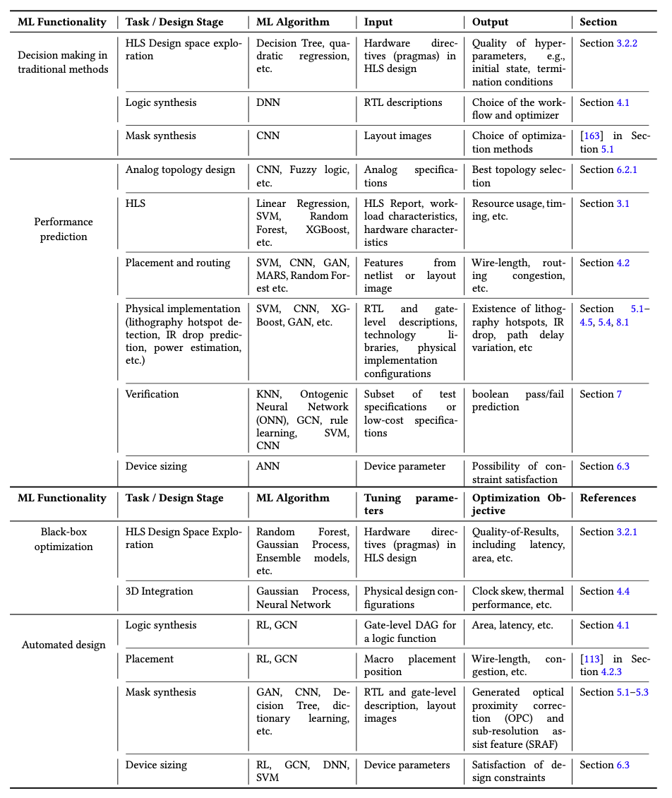

Already but not yet
Every important division of machine learning, whether it be supervised learning, unsupervised learning, active learning, and reinforcement learning has been applied to Electronic Design Automation (EDA). This paper surveys the current work being done at the intersection of these two disciplines.
We observe that most work collected in this survey can be grouped into four types: decision making in traditional methods, performance prediction, black-box optimization, and automated design.
I would argue that list is even ordered both in terms of difficulty and payoff. Traditional ML methods are already used to improve performance almost every step without altering the flow very drastically. It is comparatively easy to add traditional machine learning into the existing flows, but traditional machine learning in these cases can only hope to incrementally improve the current flow. Performance prediction is a deeper use of ML to predict various performance metrics by using previous designs as data to train models on the quality of new designs. The last two types of use in EDA I believe to have the greatest payoff in the future, based on the excellence these techniques can achieve in the EDA domain. Black box optimization is the next level of optimization that aims to replace entire steps in the flow automatically. The paper notes the stakes of these techniques as mistakes at this level will prove to be very costly. Finally the last frontier of automation is automated design. This hopes to use the combination of Deep Learning and Reinforcement Learning to automate complex design tasks required by EDA. Automated design has the potential to be the most beneficial aspect of the field, as long as it is able to deliver on the promise of accurately automating this difficult task. One open question for me is the obtainability of this technology, because many times I have seen products which promise to serve by automating a large gap in the market, but the reality of the problem vs. the actual performance of the promise differs enough to fully dominate the existing landscape.
Below shows the tabular view from the paper that really highlights the four different applications from ML and the

Although the study on ML for EDA can trace back to the last century, most of the works included in this survey are in recent five years.
It is truly an exciting time to be looking at the EDA field because the general developments in machine learning research are so widely applicable to this important field of designing the chips of tomorrow.
The Paper in Brief
This paper is too long to go into much detail, so I only list the major ideas they cover, while commenting on interesting areas to me. The meat of the paper covers the main areas that ML for EDA is currently being applied:
- HIGH LEVEL SYNTHESIS
- LOGIC SYNTHESIS AND PHYSICAL DESIGN
- LITHOGRAPHY AND MASK SYNTHESIS
- ANALOG DESIGN
- VERIFICATION AND TESTING
- OTHERs (Power, etc)
As can be seen from the overview table, the survey is very comprehensive, and I would recommend the paper highly if interested in the topic. It is actually the best survey paper I have read in terms of quality of descriptions, and breadth of coverage.
Conclusions
My take-away from the paper is the tension between the promise of automation unlocked by Deep Reinforcement Learning, and the ultimate reality that DeepRL will be able to provide. RL is notorious for being difficult to perfect, and also computationally expensive for even small problems such as solving Atari. At the scale to be useful for EDA will RL have any practical addition for the field or will it only ever promise? Google and other companies are investing in this area, so this decade should deliver the answer.